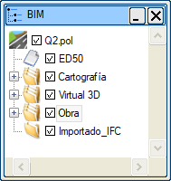
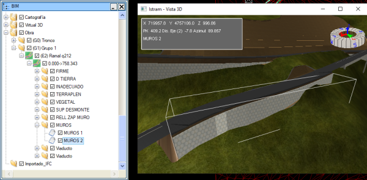
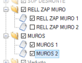
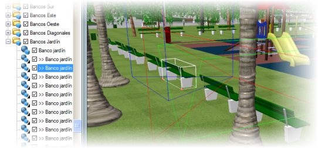
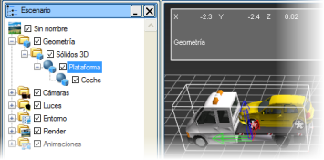

| |
|
BIM AĞACI
|
|
Genel Bilgiler Ağacın Genel Yapısı Mevcut Düğümün Seçimi: Olası Eylemler Elemanların, Bağlantıların ve Bağımlılıkların Hiyerarşik Organizasyonu Genel Bilgiler BIM Ağacı, proje ve Sanal 3B'deki temsili hakkındaki tüm bilgileri hiyerarşik bir şekilde göstermekten sorumludur. Bu ağaç aracılığıyla çeşitli görselleştirme, oluşturma ve eleman değiştirme seçenekleri gerçekleştirilebilir. Çok değerli bir başlangıç sınıflandırması yapan çeşitli ana düğümlerden veya klasörlerden oluşur. Her yeni eleman, otomatik olarak uygun klasör içinde oluşturulur. Saklanan elemanlar üzerinde gezinme, fare ve dikey kaydırma çubuğu aracılığıyla yapılır. Her bölümü gizleme ve gösterme, klasörleri genişletme veya daraltma olanağının yanı sıra, herhangi bir elemana tıklandığında bu eleman seçilir ve 3B alanda bir 'sınırlayıcı kutu' ile vurgulanır. Ağaç ayrıca, seçilen düğüme göre özelleştirilmiş bir bağlam menüsü sunarak bazı doğrudan eylemlerin hızlı bir şekilde gerçekleştirilmesine olanak tanır. Ağacın Genel Yapısı Bir projenin temel BIM ağacı yapısı, birincil düğümlerle temsil edilen temel bir yapı üzerine kuruludur.
Mevcut Düğümün Seçimi: Olası Eylemler Bir nesne seçildiğinde, özellikler penceresinde özellikleri sunulur ve bunlardan herhangi biri değiştirilebilir. Bir elemanın seçimi, ağaçtaki adına tıklayarak veya Sanal 3B penceresinde üzerine tıklayarak yapılabilir. 
Her iki şekilde de, seçilen nesne, nesnenin minimum ve maksimum koordinatlarına göre oluşturulan sınırlayıcı kutusu veya 'kutusu' ile vurgulanır. Bazı elemanlarda veya düğümlerde, isim doğrudan ağaç üzerinden değiştirilebilir. Bunun için üzerine fare ile ikinci bir kez tıklamak yeterlidir. Elemanların Görünürlüğünü Etkinleştirme ve Devre Dışı Bırakma Her düğümün ve her klasörün yanında, görünürlüğünü etkinleştirmeye veya devre dışı bırakmaya olanak tanıyan bir onay kutusu bulunur. Eğer bu bir klasör ise, içerdiği tüm elemanların görünürlüğü etkinleştirilir veya devre dışı bırakılır. Bu eylem, veri hacmi nedeniyle sahnenin ağır olduğu durumlarda veya sadece belirli bir nesne grubunun "rahatsız etmesi" istenmediğinde çok faydalı olabilir. Elemanları Silme Bağlam menüsü tarafından sunulan nesne silme seçeneklerine ek olarak, ağaç, <Del> tuşuna basıldığında anında tepki verir ve işaretlenen nesneleri hemen siler. Bu eylemin bir klasör düğümünde gerçekleştirilmesi durumunda, kullanıcıdan onay istenir ve barındırılan tüm elemanların silineceği bildirilir. Bu durumda, birincil düğümler 'boşaltılır', ancak var olmaya devam eder. Bağlam Menüleri  Her nesnenin, sağ fare tuşuna basıldığında sunulan özel bağlam menüsü seçenekleri vardır. Tüm düzenleme ve organizasyon eylemleri bu sistem aracılığıyla gerçekleştirilir. Her nesnenin, sağ fare tuşuna basıldığında sunulan özel bağlam menüsü seçenekleri vardır. Tüm düzenleme ve organizasyon eylemleri bu sistem aracılığıyla gerçekleştirilir.Seçilen düğümün türüne bağlı olarak, farenin ikincil tuşuna basıldığında, bazı eylemlerin çok rahat ve basit bir şekilde gerçekleştirilmesini sağlayan özel bir bağlam menüsü sunulur. Basit (düzenleyici olmayan) nesneler durumunda, bağlam menüsünün ilk bölümünde aşağıdaki seçenekler gösterilir:
Elemanların, Bağlantıların ve Bağımlılıkların Hiyerarşik Organizasyonu Görüldüğü gibi, elemanları bir klasörden diğerine taşıma, yeni klasörler oluşturma ve elemanlar arasında bağlantılar kurma imkanı vardır. Bu seçenekler, bir sahnenin organizasyonunun çok basit bir görev olmasını sağlamak için geliştirilmiştir ve aynı zamanda animasyonlar oluştururken çok faydalı olan belirli mekansal davranışlara izin vermekten sorumludur. Klonlama: Özelliklerin Kalıtımıyla Nesne Kopyalama Bir elemanı klonlama imkanı, kullanıcının bir sahne tasarlarken zaman kazanmasını ve sistemin pozisyonları hesaplarken, dokuları uygularken veya aynı türdeki nesneleri değiştirirken zaman kazanmasını sağlar. Klonlama sadece fiziksel özellikler düzeyinde çalışır: geometri, boyut ve malzeme; ancak konum ve yönelimde farklılık gösterebilirler. Aynı olacak birden fazla eleman olduğunda bu tekniği kullanmak uygundur, çünkü hesaplama düzeyinde çok hızlı bir şekilde işlenirler, çünkü bellekte sadece bir orijinal eleman bulunur, geri kalan klonlar ise sadece bir referans kullandıkları için neredeyse hiç yer kaplamaz. Klonlanmış nesneler, önlerine '>>' öneki eklendiği ve oluşturuldukları nesneyle aynı adı korudukları için ağaçta hemen ayırt edilir. İkonları da karakteristiktir. 
Nesneler Arası Mekansal Bağımlılık Nesneler arasında bağımlılıklar oluşturmak, bir birim olarak davranması gereken elemanları tasarlarken çok kullanışlıdır. Böylece, bir otomobil, bir ev vb. organize bir şekilde tanımlanabilir, bu da örneğin tüm elemanları tek seferde taşımaya olanak tanır. Böylece, bir 'ev' nesnesi oluşturulabilir ve içine temeller, kolonlar, pencereler vb. yerleştirilerek 'ev' nesnesine mekansal bir bağımlılıkları olabilir. Her 'bağlı' eleman orijinal koordinatlarını kaybeder ve onu içeren 'ebeveyn'e göreli koordinatlara sahip olur. Ağaçta, bazı nesnelerin diğerlerinin içine dahil edildiği hiyerarşik bir ilişki gözlemlenebilir. Gösterilen durumda, 'ebeveyn' olarak davranan platform aracı hareket ettirildiğinde, tüm set otomatik olarak hareket eder. Diğer bir çok önemli husus, nesnelerin konum ve dönüşünün, 'ebeveynler ve çocuklar'ın bağımsız animasyon elemanlarına dahil edilebilme olasılığını dikkate almasıdır; 'çocuklar' öteleme ve dönüşü miras alır, ancak kendilerinin de kendi öteleme ve dönüşlerine sahip olma seçeneği vardır. Bu olgunun en basit açıklaması, sahnede hareket eden bir araç durumunda, tekerleklerin bağımsız olarak dönebilmesiyle sunulur. Hiyerarşik Bağımlılıklara Sahip Bileşik Elemanlar Sahnenin organizasyonunda gerekli ve arzu edilen 'düzen', klasörlerin yanı sıra, hiyerarşik üstlerine bağlı olan birkaç elemandan oluşan 'birimler' oluşturma amacıyla nesneler arasında hiyerarşik ilişkiler kullanma imkanıyla da sağlanabilir. Böylece, örneğin, bir otomobil birkaç bileşenden oluşacaktır: şasi, tekerlekler, vb. Bunların her biri sahnede zaten mevcut olabilir veya inşa ediliyor olabilir. Aynı durum bir rüzgar türbini, bir tünel için bir fan, bir baskül köprü vb. için de geçerli olabilir. |